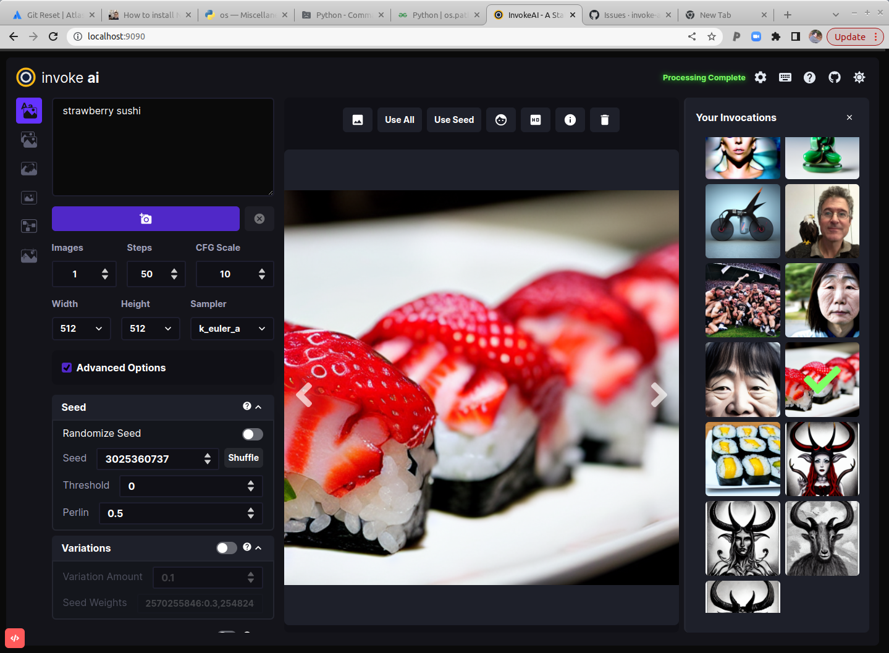
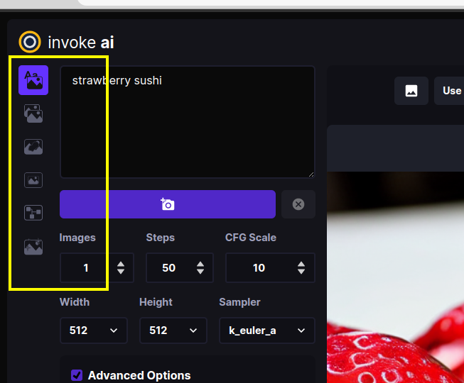
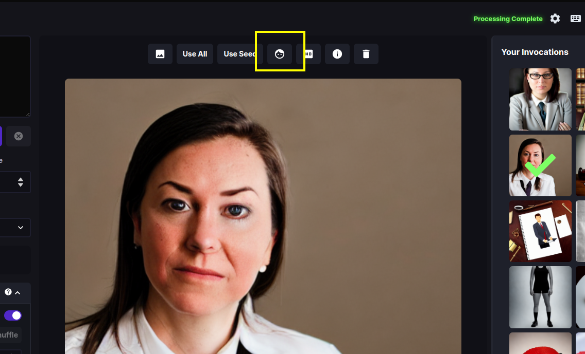
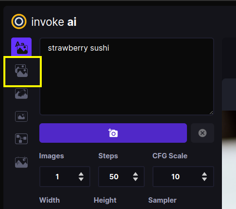
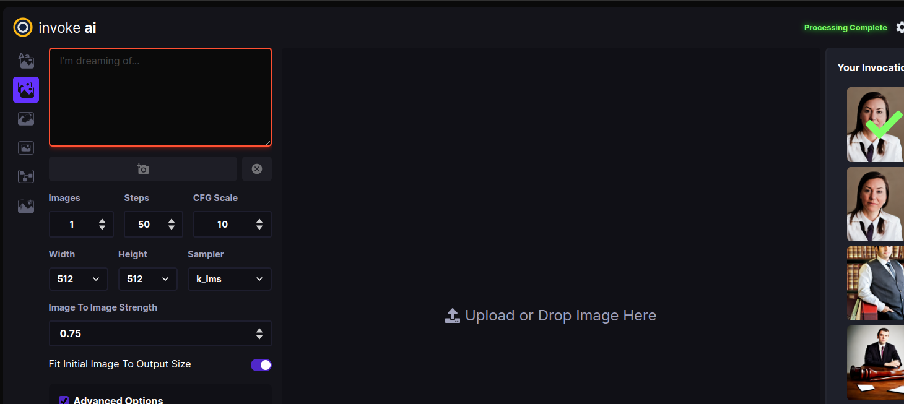
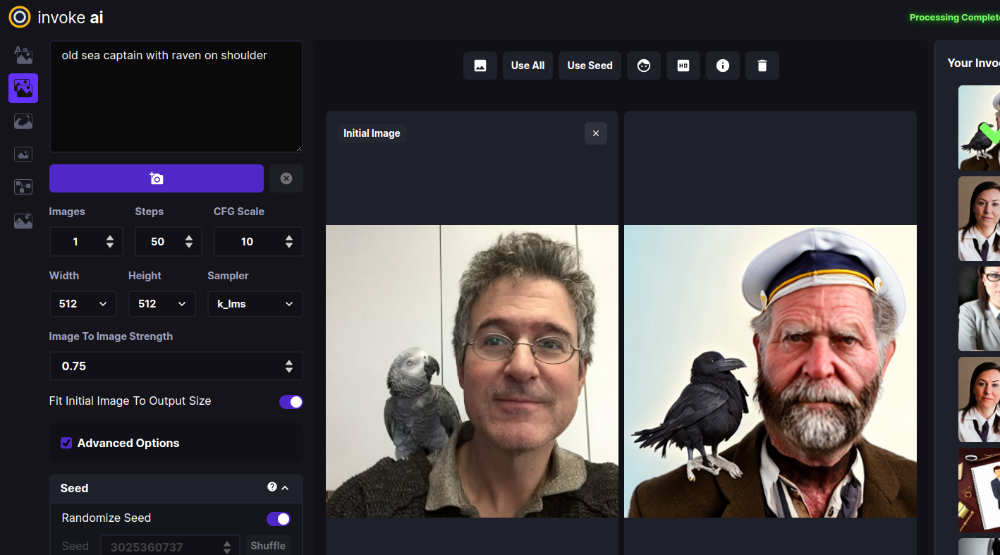
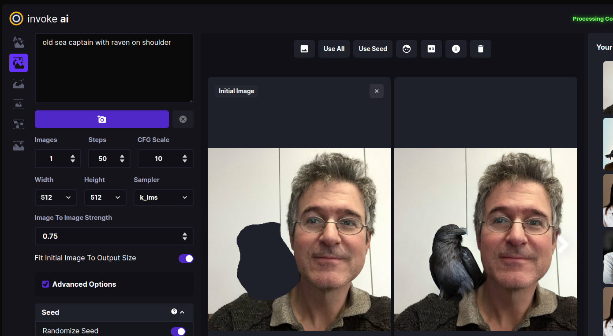

As of version 2.0.0, this distribution comes with a full-featured web server
(see screenshot).
To use it, launch the invoke.sh/invoke.bat script and select
option (2). Alternatively, with the InvokeAI environment active, run
the invokeai script by adding the --web option:
invokeai--web
You can then connect to the server by pointing your web browser at
http://localhost:9090. To reach the server from a different machine on your LAN,
you may launch the web server with the --host argument and either the IP
address of the host you are running it on, or the wildcard 0.0.0.0. For
example:
While most of the WebUI's features are intuitive, here is a guided walkthrough
through its various components.

The screenshot above shows the Text to Image tab of the WebUI. There are three
main sections:
A control panel on the left, which contains various settings for text to
image generation. The most important part is the text field (currently
showing strawberry sushi) for entering the text prompt, and the camera icon
directly underneath that will render the image. We'll call this the Invoke
button from now on.
The current image section in the middle, which shows a large format
version of the image you are currently working on. A series of buttons at the
top ("image to image", "Use All", "Use Seed", etc) lets you modify the image
in various ways.
A *gallery section on the left that contains a history of the images you
have generated. These images are read and written to the directory specified
at launch time in --outdir.
In addition to these three elements, there are a series of icons for changing
global settings, reporting bugs, and changing the theme on the upper right.
There are also a series of icons to the left of the control panel (see
highlighted area in the screenshot below) which select among a series of tabs
for performing different types of operations.

From top to bottom, these are:
Text to Image - generate images from text
Image to Image - from an uploaded starting image (drawing or photograph)
generate a new one, modified by the text prompt
Unified Canvas - Interactively combine multiple images, extend them
with outpainting,and modify interior portions of the image with
inpainting, erase portions of a starting image and have the AI fill in
the erased region from a text prompt.
Workflow Management (not yet implemented) - this panel will allow you to create
pipelines of common operations and combine them into workflows.
Training (not yet implemented) - this panel will provide an interface to textual
inversion training and fine tuning.
The inpainting, outpainting and postprocessing tabs are currently in
development. However, limited versions of their features can already be accessed
through the Text to Image and Image to Image tabs.
Launch the WebUI using python scripts/invoke.py --web and connect to it
with your browser by accessing http://localhost:9090. If the browser and
server are running on different machines on your LAN, add the option
--host 0.0.0.0 to the launch command line and connect to the machine
hosting the web server using its IP address or domain name.
If all goes well, the WebUI should come up and you'll see a green
connected message on the upper right.
Generate an image by typing strawberry sushi into the large prompt field
on the upper left and then clicking on the Invoke button (the one with the
Camera icon). After a short wait, you'll see a large image of sushi in the
image panel, and a new thumbnail in the gallery on the right.
If you need more room on the screen, you can turn the gallery off by
clicking on the x to the right of "Your Invocations". You can turn it
back on later by clicking the image icon that appears in the gallery's
place.
The images are written into the directory indicated by the --outdir option
provided at script launch time. By default, this is outputs/img-samples
under the InvokeAI directory.
Generate a bunch of strawberry sushi images by increasing the number of
requested images by adjusting the Images counter just below the Camera
button. As each is generated, it will be added to the gallery. You can
switch the active image by clicking on the gallery thumbnails.
Try playing with different settings, including image width and height, the
Sampler, the Steps and the CFG scale.
Image Width and Height do what you'd expect. However, be aware that
larger images consume more VRAM memory and take longer to generate.
The Sampler controls how the AI selects the image to display. Some
samplers are more "creative" than others and will produce a wider range of
variations (see next section). Some samplers run faster than others.
Steps controls how many noising/denoising/sampling steps the AI will take.
The higher this value, the more refined the image will be, but the longer
the image will take to generate. A typical strategy is to generate images
with a low number of steps in order to select one to work on further, and
then regenerate it using a higher number of steps.
The CFG Scale controls how hard the AI tries to match the generated image
to the input prompt. You can go as high or low as you like, but generally
values greater than 20 won't improve things much, and values lower than 5
will produce unexpected images. There are complex interactions between
Steps, CFG Scale and the Sampler, so experiment to find out what works
for you.
To regenerate a previously-generated image, select the image you want and
click Use All. This loads the text prompt and other original settings into
the control panel. If you then press Invoke it will regenerate the image
exactly. You can also selectively modify the prompt or other settings to
tweak the image.
Alternatively, you may click on Use Seed to load just the image's seed,
and leave other settings unchanged.
To regenerate a Stable Diffusion image that was generated by another SD
package, you need to know its text prompt and its Seed. Copy-paste the
prompt into the prompt box, unset the Randomize Seed control in the
control panel, and copy-paste the desired Seed into its text field. When
you Invoke, you will get something similar to the original image. It will
not be exact unless you also set the correct values for the original
sampler, CFG, steps and dimensions, but it will (usually) be close.
Let's try generating some variations. Select your favorite sushi image from
the gallery to load it. Then select "Use All" from the list of buttons
above. This will load up all the settings used to generate this image,
including its unique seed.
Go down to the Variations section of the Control Panel and set the button to
On. Set Variation Amount to 0.2 to generate a modest number of variations on
the image, and also set the Image counter to 4. Press the invoke button.
This will generate a series of related images. To obtain smaller variations,
just lower the Variation Amount. You may also experiment with changing the
Sampler. Some samplers generate more variability than others. k_euler_a is
particularly creative, while ddim is pretty conservative.
For even more variations, experiment with increasing the setting for
Perlin. This adds a bit of noise to the image generation process. Note
that values of Perlin noise greater than 0.15 produce poor images for
several of the samplers.
Stable Diffusion frequently produces mangled faces, particularly when there are
multiple figures in the same scene. Stable Diffusion has particular issues with
generating reallistic eyes. InvokeAI provides the ability to reconstruct faces
using either the GFPGAN or CodeFormer libraries. For more information see
POSTPROCESS.
Invoke a prompt that generates a mangled face. A prompt that often gives
this is "portrait of a lawyer, ¾ shot" (this is not intended as a slur
against lawyers!) Once you have an image that needs some touching up, load
it into the Image panel, and press the button with the face icon
(highlighted in the first screenshot below). A dialog box will appear. Leave
Strength at 0.8 and press *Restore Faces". If all goes well, the eyes and
other aspects of the face will be improved (see the second screenshot)

The facial reconstruction Strength field adjusts how aggressively the face
library will try to alter the face. It can be as high as 1.0, but be aware
that this often softens the face airbrush style, losing some details. The
default 0.8 is usually sufficient.
"Upscaling" is the process of increasing the size of an image while
retaining the sharpness. InvokeAI uses an external library called "ESRGAN"
to do this. To invoke upscaling, simply select an image and press the HD
button above it. You can select between 2X and 4X upscaling, and adjust the
upscaling strength, which has much the same meaning as in facial
reconstruction. Try running this on one of your previously-generated images.
Finally, you can run facial reconstruction and/or upscaling automatically
after each Invocation. Go to the Advanced Options section of the Control
Panel and turn on Restore Face and/or Upscale.
InvokeAI lets you take an existing image and use it as the basis for a new
creation. You can use any sort of image, including a photograph, a scanned
sketch, or a digital drawing, as long as it is in PNG or JPEG format.
Click on the Image to Image tab icon, which is the second icon from the
top on the left-hand side of the screen:

This will bring you to a screen similar to the one shown here:

Drag-and-drop the Lincoln-and-Parrot image into the Image panel, or click
the blank area to get an upload dialog. The image will load into an area
marked Initial Image. (The WebUI will also load the most
recently-generated image from the gallery into a section on the left, but
this image will be replaced in the next step.)
Go to the prompt box and type old sea captain with raven on shoulder and
press Invoke. A derived image will appear to the right of the original one:

Experiment with the different settings. The most influential one in Image to
Image is Image to Image Strength located about midway down the control
panel. By default it is set to 0.75, but can range from 0.0 to 0.99. The
higher the value, the more of the original image the AI will replace. A
value of 0 will leave the initial image completely unchanged, while 0.99
will replace it completely. However, the Sampler and CFG Scale also
influence the final result. You can also generate variations in the same way
as described in Text to Image.
What if we only want to change certain part(s) of the image and leave the
rest intact? This is called Inpainting, and a future version of the InvokeAI
web server will provide an interactive painting canvas on which you can
directly draw the areas you wish to Inpaint into. For now, you can achieve
this effect by using an external photoeditor tool to make one or more
regions of the image transparent as described in [INPAINTING.md] and
uploading that.
The file
Lincoln-and-Parrot-512-transparent.png
is a version of the earlier image in which the area around the parrot has
been replaced with transparency. Click on the "x" in the upper right of the
Initial Image and upload the transparent version. Using the same prompt "old
sea captain with raven on shoulder" try Invoking an image. This time, only
the parrot will be replaced, leaving the rest of the original image intact:

Would you like to modify a previously-generated image using the Image to
Image facility? Easy! While in the Image to Image panel, hover over any of
the gallery images to see a little menu of icons pop up. Click the picture
icon to instantly send the selected image to Image to Image as the initial
image.
You can do the same from the Text to Image tab by clicking on the picture icon
above the central image panel. The screenshot below shows where the "use as
initial image" icons are located.
This concludes the walkthrough, but there are several more features that you can
explore. Please check out the Command Line Interface documentation for
further explanation of the advanced features that were not covered here.
The WebUI is only rapid development. Check back regularly for updates!
The web experience offers an incredibly easy-to-use experience for interacting
with the InvokeAI toolkit. For detailed guidance on individual features, see the
Feature-specific help documents available in this directory. Note that the
latest functionality available in the CLI may not always be available in the Web
interface.
The InvokeAI interface is available in a nano-carbon black & purple Dark Mode,
and a "burn your eyes out Nosferatu" Light Mode. These can be toggled by
clicking the Sun/Moon icons at the top right of the interface.
The left side of the InvokeAI interface is available for customizing the prompt
and the settings used for invoking your new image. Typing your prompt into the
open text field and clicking the Invoke button will produce the image based on
the settings configured in the toolbar.
See below for additional documentation related to each feature:
The currently selected --outdir (or the default outputs folder) will display all
previously generated files on load. As new invocations are generated, these will
be dynamically added to the gallery, and can be previewed by selecting them.
Each image also has a simple set of actions (e.g., Delete, Use Seed, Use All
Parameters, etc.) that can be accessed by hovering over the image.
When an image from the Invocation Gallery is selected, or is generated, the
image will be displayed within the center of the interface. A quickbar of common
image interactions are displayed along the top of the image, including:
{kind=link}
{kind=link}